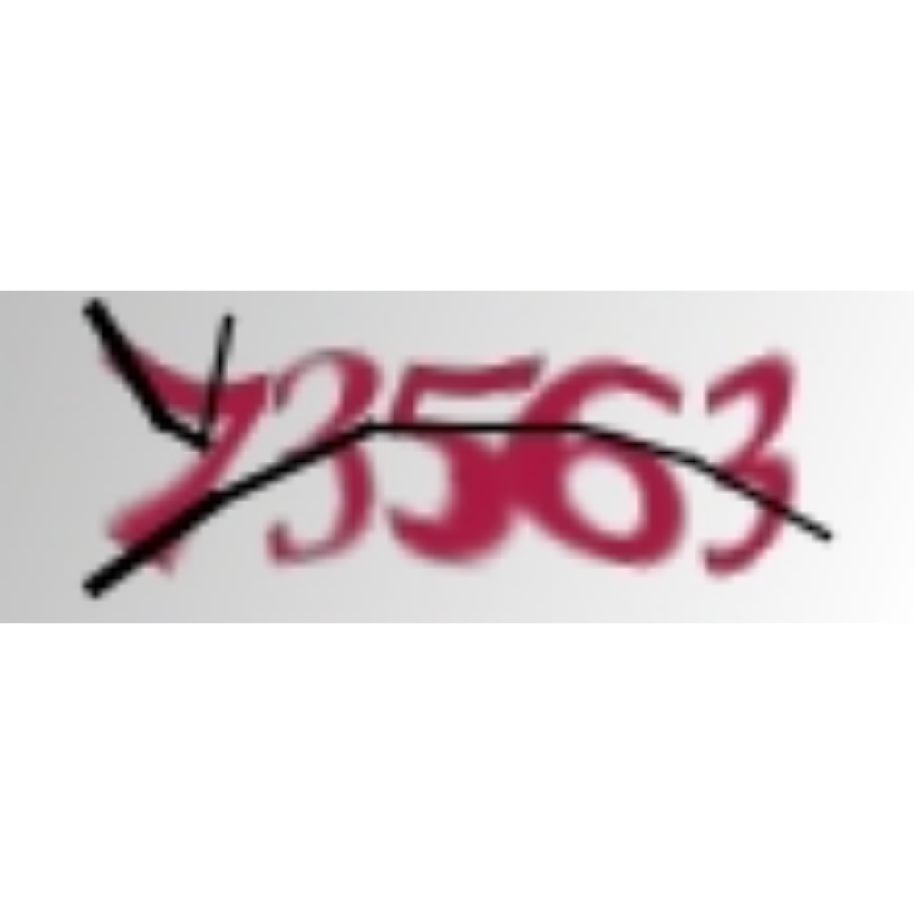

Construindo APIs
O fluxo da ciência de dados se encerra na parte de comunicação. Essa parte é responsável por transferir todo o conhecimento gerado durante a análise de dados. E isso não é nada fácil!!
knitr::include_graphics("figures/data-science-communicate.png")

A forma de construir a comunicação depende muito do interlocutor. Por exemplo, se a pessoa que vai receber a comunicação é um técnico como você, é importante elaborar um documento que deixe claro o que você fez e como você chegou nos resultados. Por outro lado, se a pessoa que vai receber seus trabalhos for um tomador de decisão, o desafio é passar os resultados de uma forma intuitiva e impactante.
Mas, e se o interlocutor for um robô? Qual a melhor forma de se comunicar com uma máquina?
Nesse material trabalhamos o conceito e aplicação de Application Programming Interfaces, ou APIs. Essa é a forma que as máquinas se comunicam nos dias de hoje.
Pré-requisitos
Esse material assume que você sabe usar dplyr e o %>%, que sabe o que é o RStudio e rmarkdown. Se você não sabe usar essas coisas, veja os materiais em http://material.curso-r.com/pipe e http://material.curso-r.com/manip.
Também seria interessante ter uma noção de pacotes em R e a utilização do curl (via terminal).
O que é uma API?
Para explicar APIs, podemos utilizar a analogia do Matrix. Tem aquela cena:

O que o Neo fez aqui? Ele conectou com uma máquina, setou no computador o que ele queria aprender, e puxou um curso de Kung Fu.
Agora, imagine que ao invés de um curso de Kung Fu, você queira saber o resultado de um modelo preditivo. Você faz o upload de uma base de dados, e recebe um score, por exemplo, um score de crédito. Ou então você recebe um dado de um servidor de banco de dados. Ou, ainda, você quebra um CAPTCHA. Melhor do que aprender Kung Fu 😄😄😄.
Hoje em dia, a maioria das grandes empresas disponibilizam APIs para análise de dados. Twitter, Facebook, Spotify, Uber e Instagram são apenas algumas delas. Num mundo dinâmico como conhecemos hoje, não faz sentido construir do zero um lugar centralizador capaz de fornecer todos os serviços; os serviços precisam ser conectados, e a conexão é feita através de APIs.
Uma vantagem de usar APIs é que ela não depende de linguagens. Na verdade, só depende de uma linguagem: as requisições web. Em particularmente, é importante saber usar as requisições GET e POST.
Colocando numa casca de noz, usamos GET quando pedimos dados para da máquina e POST quando enviamos dados para a máquina. Na prática, é possível enviar dados para a máquina usando GET, e recebemos algo de volta quando usamos POST. A diferença é que o POST é mais especializado, permitindo que você passe os dados para o servidor de diversas maneiras diferentes. Além disso, o POST permite a transferência de dados de forma segura.
Nossa tarefa será montar códigos que abrem um link para uma pessoa poder chamar usando requisições GET ou POST.
No R, existem duas soluções principais para trabalhar com APIs: opencpu e plumber. A diferença entre os dois é que o opencpu é um framework mais geral e apresenta diversas formas de resolver problemas de segurança e escalabilidade. Enquanto isso, o plumber foi montado para ser simples.
Nesse tutorial, vamos primeiro trabalhar com o plumber, depois com o opencpu. No final, voltaremos ao plumber para uma aplicação mais prática.
Para contextualizar nossa aplicação, utilizaremos um preditor de notas dos filmes do IMDb. Para isso, utilizaremos a base de dados movies do pacote ggplot2movies. Essa base contém informações das notas e outras características de 58.788 filmes. Para mais detalhes sobre a base, rode ?movies.
Se não tiver esse pacote, rode install.packages("ggplot2movies").
library(tidyverse)
## Loading tidyverse: ggplot2
## Loading tidyverse: tibble
## Loading tidyverse: tidyr
## Loading tidyverse: readr
## Loading tidyverse: purrr
## Loading tidyverse: dplyr
## Conflicts with tidy packages ----------------------------------------------
## filter(): dplyr, stats
## lag(): dplyr, stats
dados <- ggplot2movies::movies %>%
filter(!is.na(budget), budget > 0) %>%
select(title, year, budget, rating) %>%
arrange(desc(year))
dados
## # A tibble: 5,183 x 4
## title year budget rating
## <chr> <int> <int> <dbl>
## 1 90 2005 4000 9.1
## 2 Alien Abduction 2005 600000 1.9
## 3 All the Stage Is a World 2005 12000 7.0
## 4 Alone in the Dark 2005 20000000 2.1
## 5 Amityville Horror, The 2005 18000000 5.8
## 6 And I Lived 2005 20000 9.4
## 7 Are We There Yet? 2005 32000000 3.5
## 8 Ash Wednesday 2005 4999 8.6
## 9 Assault on Precinct 13 2005 20000000 6.3
## 10 Ballad of Jack and Rose, The 2005 1500000 6.2
## # ... with 5,173 more rows
Nosso modelo tentará prever rating utilizando as seguintes variáveis:
budget: orçamento do filme em dólaresyear: ano do filme (considerado como número inteiro)
O modelo é dado por
modelo <- lm(rating ~ budget + year, data = dados)
summary(modelo)
##
## Call:
## lm(formula = rating ~ budget + year, data = dados)
##
## Residuals:
## Min 1Q Median 3Q Max
## -5.2325 -0.9537 0.1408 1.0482 3.9507
##
## Coefficients:
## Estimate Std. Error t value Pr(>|t|)
## (Intercept) 1.501e+01 2.040e+00 7.355 2.20e-13 ***
## budget 3.645e-10 9.570e-10 0.381 0.703
## year -4.469e-03 1.029e-03 -4.342 1.44e-05 ***
## ---
## Signif. codes: 0 '***' 0.001 '**' 0.01 '*' 0.05 '.' 0.1 ' ' 1
##
## Residual standard error: 1.541 on 5180 degrees of freedom
## Multiple R-squared: 0.003793, Adjusted R-squared: 0.003408
## F-statistic: 9.861 on 2 and 5180 DF, p-value: 5.318e-05
R^2 de 0.003, nada mal (risos). Agora, vamos montar uma função que prevê a nota de um filme com base no seu orçamento e ano.
funcao_que_preve <- function(orcamento, ano) {
predict(modelo, newdata = data.frame(budget = orcamento, year = ano))
}
Também faremos uma função que retorna uma amostra aleatória de dez casos da base de dados
solta_10 <- function() {
dados %>%
sample_n(10)
}
Plumber
Para criar uma API com o plumber, você precisa de três coisas:
- Uma função que executa uma ação
- Uma documentação da função
- Selecionar uma porta para disponibilizar sua api
Por exemplo, para a função solta_10(), bastaria criar um script R/meuscript.R com o conteúdo abaixo
#* @get /solta
solta_10 <- function() {
dados %>%
sample_n(10)
}
Após criar esse R/meuscript.R, basta rodar
p <- plumber::plumb('R/meuscript.R')
p$run(port = 8888)
Starting server to listen on port 8888
No momento que você rodou p$run(), a sua sessão do R ficou ocupada. O que esse código está fazendo é servir a sua função! Ela será acessível pelo seu próprio computador, através de http://localhost:8888. Para testar, abra uma aba de terminal no RStudio e rode
curl "http://localhost:8888/solta"
No lugar do curl (terminal), você poderia abrir uma outra sessão do R e rodar:
httr::GET("http://localhost:8888/solta")
Note que chamamos a função pelo nome que está escrito em #* @get ....
Você também pode testar a solução copiando o IP do seu servidor e substituir no lugar do localhost. Pronto! você fez uma API.
Agora, vamos fazer uma API que aceita uma requisição POST. Basta usar a mesma abordagem:
#* @post /prever
funcao_que_preve <- function(orcamento, ano) {
d <- data.frame(budget = as.numeric(orcamento), year = as.numeric(ano))
predict(modelo, newdata = d)
}
Novamente, basta adicionar o código no script R/meuscript.R e rodar com plumb.
p <- plumber::plumb('R/meuscript.R')
p$run(port = 8888)
Agora, você pode prever a nota do IMDb rodando:
curl --data "orcamento=10000&ano=1991" "http://localhost:8888/prever"
Exercícios
Entre na documentação do plumber em https://www.rplumber.io/ e leia.
- Lembre que também é possível chamar uma função com parâmetros usando
GET! Descubra como. - Crie com o
plumberuma funçãoplotarque retorna um gráfico de dispersão debudget(eixo x) erating(eixo y). Salve a imagem rodando
curl "http://localhost:8888/plotar" > meu_plot.png
OpenCPU
O pacote opencpu usa uma lógica um pouco diferente do plumber. Para o opencpu,
- todas as funções estão dentro de um pacote em R
- chamamos as funções como se o pacote fosse um site.
- usamos
GETpara obter informações sobre o pacote e suas funções - usamos
POSTpara de fato rodar as funções
Para utilizar o opencpu, primeiro teremos de criar um pacote em R. Se tiver interesse em como criar novos pacotes muito rápido, leia esse artigo, Aqui, utilizaremos o código
devtools::create('preditorIMDb')
Dentro da pasta R do pacote preditorIMDb, criaremos um arquivo funs.R com as funções definidas anteriormente em R/meuscript.R, mas com uma documentação de pacote no lugar da documentação do plumber:
#' Solta dez observações
#'
#' A partir de uma base de dados, solta 10 observações aleatórias
#'
#' @export
solta_10 <- function() {
dplyr::sample_n(dados, 10)
}
#' Prevê o score do filme
#'
#' Com base no orçamento e no ano, solta o rating médio de um filme
#'
#' @param orcamento Orçamento do filme
#' @param ano Ano do filme
#'
#' @export
funcao_que_preve <- function(orcamento, ano) {
predict(modelo, newdata = data.frame(budget = orcamento, year = ano))
}
Agora precisamos carregar a documentação e instalar o pacote:
# adiciona dependencias de pacotes externos
devtools::use_package('tidyverse', pkg = 'preditorIMDb')
devtools::use_package('ggplot2movies', pkg = 'preditorIMDb')
# dados
devtools::use_data(modelo, pkg = 'preditorIMDb')
devtools::use_data(dados, pkg = 'preditorIMDb')
# documenta o pacote
devtools::document('preditorIMDb')
# instala o pacote na máquina
devtools::install('preditorIMDb')
Agora podemos rodar nossa API com base no pacote, fazendo
opencpu::ocpu_start_app('preditorIMDb')
Para ver o código da função, basta rodar
curl http://localhost:5656/ocpu/library/preditorIMDb/R/solta_10/print
Para de fato rodar o a função, se sua função não tiver parâmetros, rode
curl http://localhost:5656/ocpu/library/preditorIMDb/R/solta_10/json -X POST
Exercícios:
Entre na documentação do OpenCPU em https://www.opencpu.org/api.html
- O que acontece quando você roda
curl http://localhost:5656/ocpu/library/preditorIMDb/R/solta_10 -X POST
? Explique cada uma dessas saídas
/ocpu/tmp/x0ed707c4a1/R/solta_10
/ocpu/tmp/x0ed707c4a1/R/.val
/ocpu/tmp/x0ed707c4a1/source
/ocpu/tmp/x0ed707c4a1/console
/ocpu/tmp/x0ed707c4a1/info
/ocpu/tmp/x0ed707c4a1/files/DESCRIPTION
- Descubra como rodar uma requisição POST com parâmetros e rode
funcao_que_preve(10000, 2004).
OpenCPU gratuito!
O opencpu é mais do que um pacote em R! Se você olhar no site do produto, verá que um esforço enorme foi envidado por seu autor, Jeroen Ooms para desenvolver não só o pacote como também um software para servir vários aplicativos feitos em R. Com o software opencpu, basta você criar vários pacotes com soluções para que elas sejam imediatamente utilizáveis na forma de APIs.
Já pensou se existisse algum ser generoso que criasse um servidor com todos os pacotes do CRAN e disponibilizasse esse recurso online e de graça para todos? Muito bem, essa pessoa existe, e trata-se do próprio Jeroen!
Assim, basta acessar http://cran.ocpu.io para ter todos os pacotes do R em suas mãos. Por exemplo, podemos rodar
r <- httr::POST("http://cran.ocpu.io/praise/R/praise/json")
httr::content(r)
## [[1]]
## [1] "You are amazing!"
(o pacote praise é um gerador de elogios aleatório)
E tem mais! Com o serviço do ocpu.io você pode vincular sua conta ao GitHub e deixar todos os seus pacotes funcionarem como APIs automaticamente. Veja em https://www.opencpu.org/cloud.html como fazer isso.
Por exemplo, o post da Curso-R chamado Aquele 1% é deep learning foi montado usando OpenCPU como gerador dos textos do Wesley Safadão.
r <- httr::POST("http://jtrecenti.ocpu.io/safadao/R/gen/json")
cat(httr::content(r)[[1]])
## meu coração apaixonado atormentado em do| seu jeito,o desce
## to com casa é a era
## eu descanto com os os mais de som do sonhar
##
## até o meu som ta sem você comigo
## neu quia rolar repolho,
## bom vamos ela tantar vito
## você se dar seu ligo de uma carinha
##
## quando em tote como corro só
## que eu saio assim geito me chama
## de canada desligar nasci eu iro
## q
## <truncated>
Plumber em produção
Agora vamos mostrar um exemplo que utilizamos em produção para quebrar captchas. Vamos estudar o repositório api da página do github https://github.com/decryptr. Trata-se de um código que carrega os modelos dos quebradores de CAPTCHA e cria funções do tipo predict_* que recebem uma imagem de CAPTCHA e retornam um texto contendo o resultado da classificação.
Por exemplo, o código abaixo, salvo em R/captcha.R serve para carregar o modelo para quebrar o CAPTCHA da receita federal.
library(magrittr)
library(decryptr)
reticulate::py_available(TRUE)
suppressMessages(suppressWarnings({
rfb_model <- decryptrModels::read_model('rfb')
trt_model <- decryptrModels::read_model('trt')
tjmg_model <- decryptrModels::read_model('tjmg')
esaj_model <- decryptrModels::read_model('esaj')
}))
#* @post /predict_tjmg
predict_tjmg <- function(img) {
img_decoded <- base64enc::base64decode(img)
predict(tjmg_model, newdata = decryptr::prepare(img_decoded))
}
Como vimos anteriormente, basta rodar
p <- plumber::plumb('R/captcha.R')
p$run(port = 8888)
library(decryptr)
arq <- captcha_download_tjmg()
library(decryptr)
arq <- "./captcha5fdb51a0b41b.jpeg"
arq %>%
read_captcha() %>%
plot()

(echo -n '{"img": "'; base64 "captcha5fdb51a0b41b.jpeg"; echo '"}') |
(curl -s -H "Content-Type: application/json" -d @- http://localhost:8888/predict_tjmg) |
sed 's/[^[:alnum:]]//g'
73563
Ou, em outra sessão do R
path <- 'captcha5fdb51a0b41b.jpeg'
base64 <- base64enc::base64encode(readr::read_file_raw(path))
r <- httr::POST('http://localhost:8888/predict_tjmg',
body = list(img = base64),
encode = 'json')
httr::content(r, 'text')
Fazendo mais com o plumber
O plumber também pode ser utilizado numa solução Docker. O Docker é um serviço de containers, e um container é uma espécie de máquina virtual que roda somente a sua aplicação.
A vantagem de usar Docker é que você seria capaz de instalar sua API em qualquer servidor, sem precisar configurar muitas coisas na máquina.
Para ver como usar plumber com Docker, siga a documentação deste link: https://www.rplumber.io/docs/hosting.html#docker.